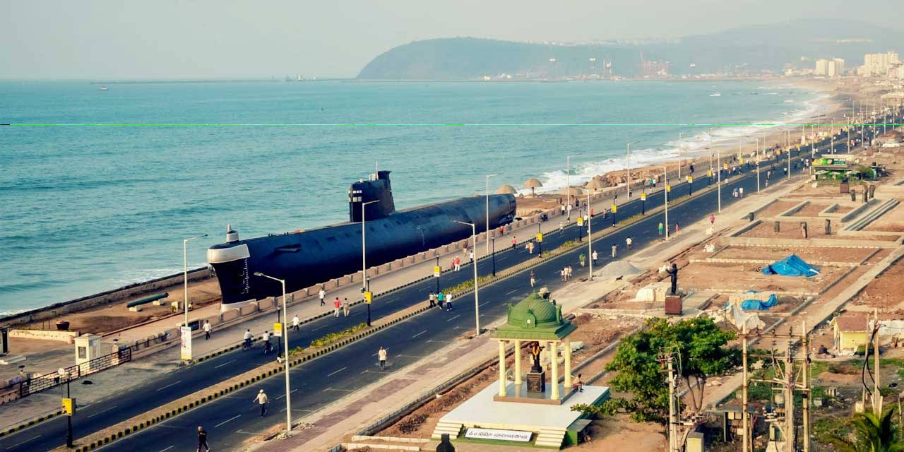

Submarine Museum
The Submarine Museum in Vizag is a maritime museum housed in a decommissioned submarine, INS Kursura. It offers visitors a unique opportunity to explore the inside of a submarine and learn about naval history and operations.
Location: Vizag, Andhra Pradesh, India
Exhibits: Historical artifacts, submarine interiors, naval equipment
Transportation: Accessible by road, located near major tourist attractions in Vizag.